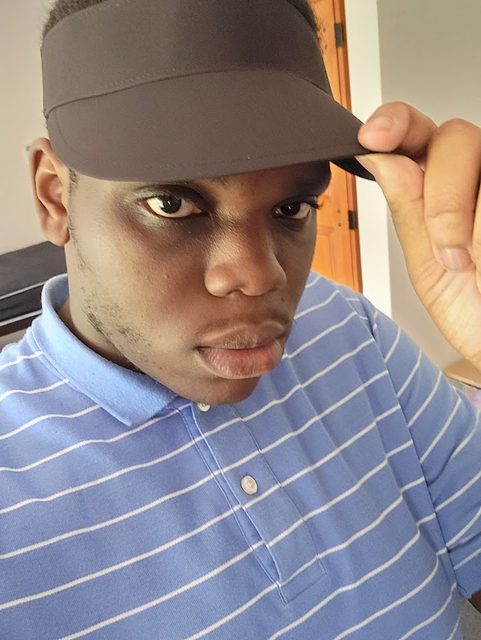
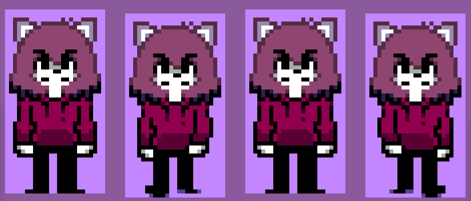
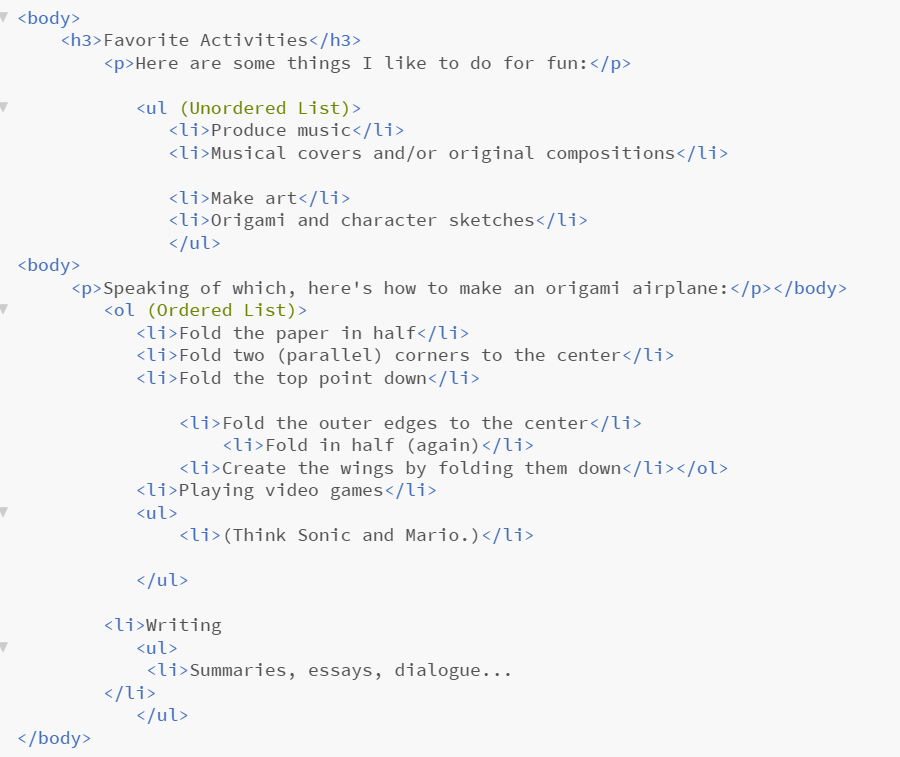
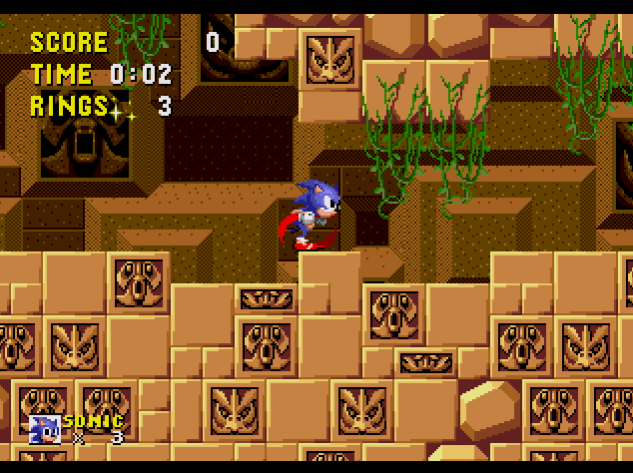
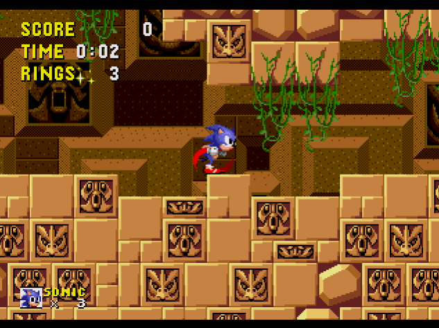
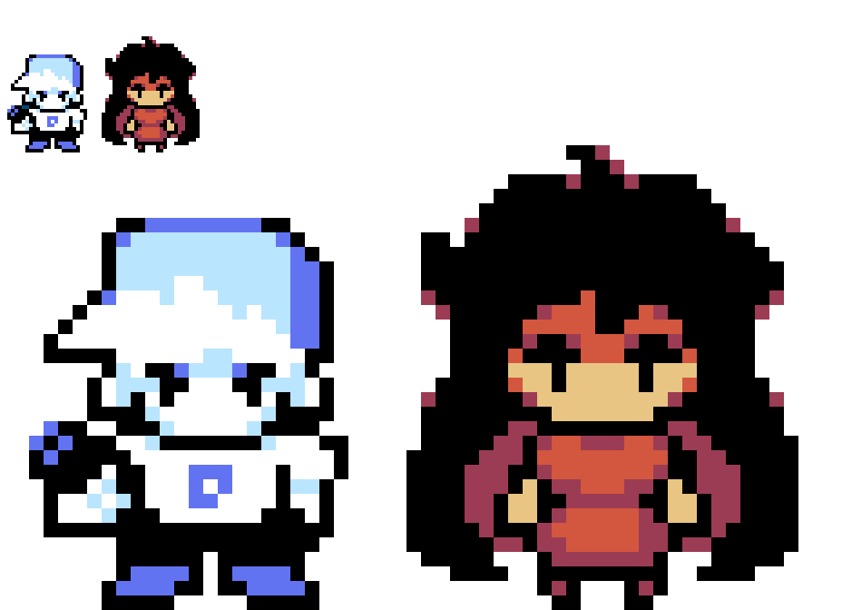
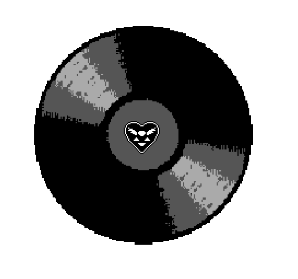
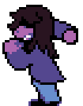

\ Itoro Kufre Ikpe - Aspiring Fandom Artist /
About Me
I am a 19-year-old (turning 20) college student, gamer and freelance web designer. Some of my favorite cartoons to watch include Steven Universe, The Amazing World of Gumball and Regular Show. Video games I like playing/watching would include Mario, Sonic, Five Nights at Freddy's and Tetris.

Education
- Cheyney University - Class of 2027, Liberal Studies Degree w/ Graphic Design Certificate
- Academy Park High School - Class of 2023, High School GED
- Delaware County Technical High School - Electrical Engineering
Work Experience
- Community Volunteer for Cheyney University (2023 to Present) - As a member of the Cheyney University Honors Academy, it is my obligation to serve 10 hours of community service per semester. Contributions include:
- Setting things up and advertising for Career Expo
- Tore boxes open for the Banned Books event in Spring 2024
- Attended the Disney College Program Zoom meeting
- Self-Employed (2023 to Present) - I take paid commissions in sprite art and music production. If you want more information on this, visit my Ko-Fi!
Skills
As stated beforehand, I'm proficient in music, pixel art and coding within HTML. Some examples of my skills are shown below:



Some of the other skills that I possess (besides technical feats) include proofreading, strong leadership and the ability to collaborate with others effectively.
Passion Projects
A few projects of mine include...
Sonic Replayable (ON HOLD) - A ROM Hack of Sonic 1 that's meant to be an "Encore Mode" similar to Sonic Mania Plus, so expect some cool twists to the level design! The page for it can be seen here.
 

CD-Sonic Beyond (ON HOLD) - This is essentially a Sonic fangame that aims to be a complete version of v0.02, a very early Sonic CD prototype built one year before its release (1992). Image used is a mockup made for the project.

Vs. Susie (IN PROGRESS) - Experience the Friday Night Funkin' mod that takes place in a world where reality meets fiction. More information can be found through its YouTube channel.


